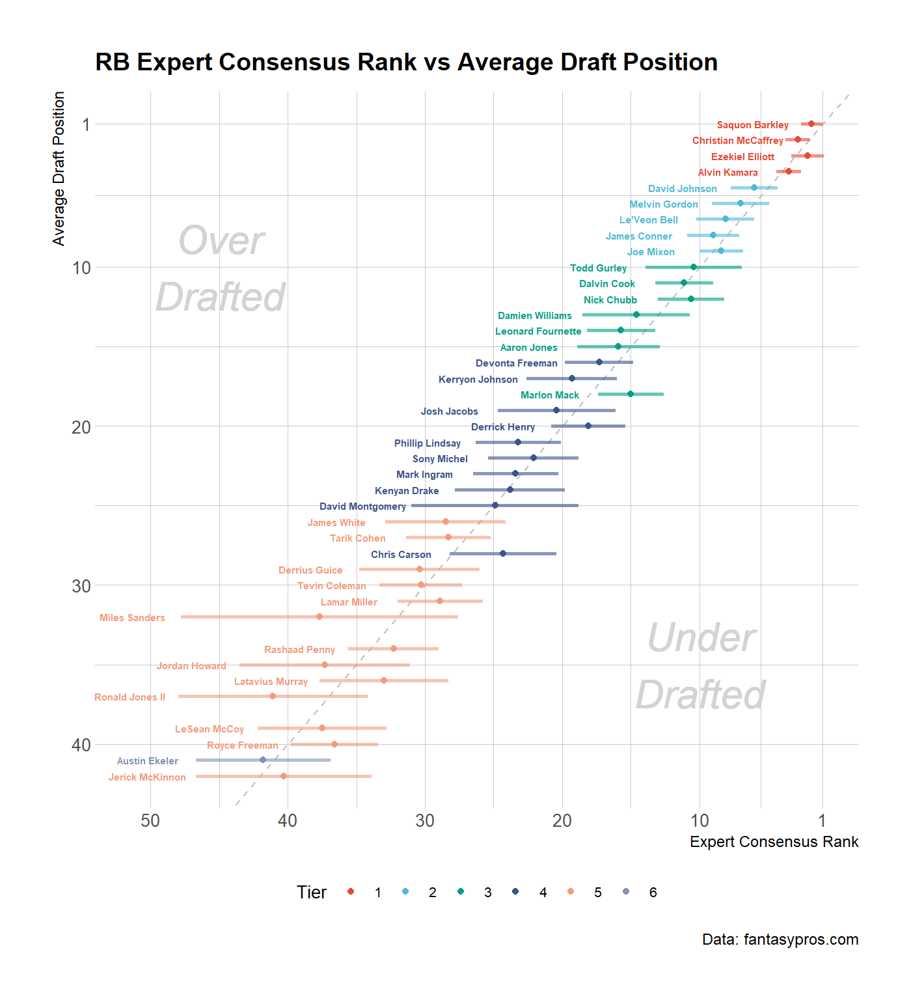

The goal of fantasypros is to provide easy and reproducable access to data provided on fantasypros. The intital focus is on NFL and fantasy football data, but other sports are planned to be added
Installation
You can install the released version of fantasypros from CRAN with:
And the development version from GitHub with:
Visualizing Expert Consensus Ranking
library(fantasypros)
library(ggplot2)
library(dplyr)
fp_draft_rankings("RB") %>%
filter(rank <= 40) %>%
ggplot(
aes(x = avg, y = adp, colour = factor(tier), label = player)
) +
geom_abline(
slop = 1,
intercept = 0,
linetype = 2,
color = "grey"
) +
geom_errorbarh(
aes(xmin = avg - std_dev, xmax = avg + std_dev),
height = 0,
alpha = 0.6,
size = 0.9,
show.legend = FALSE
) +
geom_point(size = 1.5) +
scale_x_reverse(
breaks = c(1, seq(10,70, 10))
) +
scale_y_reverse(
breaks = c(1, seq(10,60, 10))
) +
ggsci::scale_color_npg() +
hrbrthemes::theme_ipsum_rc(
base_size = 10,
axis_title_size = 9,
plot_title_size = 14
) +
labs(
title = "RB Expert Consensus Rank vs Average Draft Position",
colour = "Tier",
x = "Expert Consensus Rank",
y = "Average Draft Position",
caption = "Data: fantasypros.com"
) +
geom_text(
aes(x = avg + std_dev),
size = 2,
nudge_x = -3.5,
show.legend = FALSE,
fontface = "bold"
) +
geom_text(
aes(x = 10, y = 35), label = "Under\nDrafted", color = "light grey",
size = 8, family = "Roboto Condensed", fontface = "italic"
) +
geom_text(
aes(x = 45, y = 10), label = "Over\nDrafted", color = "light grey",
size = 8, family = "Roboto Condensed", fontface = "italic"
) +
theme(
legend.position = "bottom",
) +
guides(
colour = guide_legend(nrow = 1)
)
Team Target Distributions
library(fantasypros)
library(tidyverse)
library(ggplot2)
fp_team_targets(season = 2018) %>%
select(
team,
ends_with("percent")
) %>%
mutate(
team = forcats::fct_reorder(team, rb_percent)
) %>%
gather("position", "percent", -team) %>%
mutate(
pos = factor(
position,
levels = c("te_percent", "wr_percent", "rb_percent"),
labels = c("TE", "WR", "RB")
)
) %>%
ggplot() +
geom_col(
aes(team, percent, fill = pos), alpha = 0.9
) +
scale_x_discrete(expand = c(0, 0)) +
scale_y_continuous(expand = c(0, 0)) +
ggsci::scale_fill_jama() +
hrbrthemes::theme_ipsum_rc() +
coord_flip() +
labs(
title = "Team Target Distribution",
fill = NULL,
y = "Target %",
x = NULL,
caption = "Data: fantasypros.com"
) +
theme(
legend.position = "bottom"
)
Season Stats
library(fantasypros)
fp_stats("QB", season = 2018, start_week = 3, end_week = 8)
#> # A tibble: 151 x 23
#> player pos team season start_week end_week scoring passing_cmp
#> <chr> <chr> <chr> <dbl> <dbl> <dbl> <chr> <dbl>
#> 1 Aaron~ QB GB 2018 3 8 half 124
#> 2 Alex ~ QB WAS 2018 3 8 half 90
#> 3 Ben R~ QB PIT 2018 3 8 half 132
#> 4 Brett~ QB TEN 2018 3 8 half 0
#> 5 Brian~ QB BUF 2018 3 8 half 0
#> 6 Brian~ QB NE 2018 3 8 half 0
#> 7 Brock~ QB DET 2018 3 8 half 0
#> 8 Byron~ QB PIT 2018 3 8 half 0
#> 9 Chad ~ QB KC 2018 3 8 half 0
#> 10 Chad ~ QB MIA 2018 3 8 half 0
#> # ... with 141 more rows, and 15 more variables: passing_att <dbl>,
#> # passing_pct <dbl>, passing_yds <dbl>, passing_y_a <dbl>,
#> # passing_td <dbl>, passing_int <dbl>, passing_sacks <dbl>,
#> # rushing_att <dbl>, rushing_yds <dbl>, rushing_td <dbl>, fl <dbl>,
#> # g <dbl>, fpts <dbl>, fpts_g <dbl>, own <dbl>Weekly Snap Counts
library(fantasypros)
fp_snap_counts(season = 2018)
#> # A tibble: 505 x 23
#> player pos team season w1 w2 w3 w4 w5 w6 w7
#> <chr> <chr> <chr> <dbl> <dbl> <dbl> <dbl> <dbl> <dbl> <dbl> <dbl>
#> 1 Aaron~ QB GB 2018 46 77 69 76 81 71 NA
#> 2 Adria~ RB WAS 2018 42 25 32 NA 13 37 34
#> 3 Alex ~ QB WAS 2018 79 74 61 NA 61 70 60
#> 4 Ben R~ QB PIT 2018 84 82 66 62 60 73 NA
#> 5 Benja~ TE NE 2018 51 54 45 37 36 0 36
#> 6 Brian~ QB NE 2018 0 0 0 4 0 0 0
#> 7 Chad ~ QB KC 2018 0 0 0 0 0 0 0
#> 8 Chase~ QB CHI 2018 0 0 0 3 NA 0 1
#> 9 Danny~ WR DET 2018 45 44 31 42 53 75 55
#> 10 Delan~ TE TEN 2018 39 0 0 0 0 0 0
#> # ... with 495 more rows, and 12 more variables: w8 <dbl>, w9 <dbl>,
#> # w10 <dbl>, w11 <dbl>, w12 <dbl>, w13 <dbl>, w14 <dbl>, w15 <dbl>,
#> # w16 <dbl>, w17 <dbl>, ttl <dbl>, avg <dbl>
fp_snap_counts(pos = "defense", season = 2018, percentage = TRUE)
#> # A tibble: 769 x 23
#> player pos team season w1 w2 w3 w4 w5 w6 w7
#> <chr> <chr> <chr> <dbl> <dbl> <dbl> <dbl> <dbl> <dbl> <dbl> <dbl>
#> 1 Patri~ CB ARI 2018 99 100 99 98 97 100 98
#> 2 Adria~ DE ATL 2018 30 30 42 37 51 33 40
#> 3 Princ~ CB CHI 2018 98 100 50 0 NA 67 98
#> 4 Marce~ DT JAC 2018 65 75 68 57 66 60 53
#> 5 Camer~ DE PIT 2018 85 86 73 74 71 80 NA
#> 6 Von M~ LB DEN 2018 88 77 68 68 74 70 85
#> 7 Rober~ DE DAL 2018 59 51 71 56 68 71 58
#> 8 J.J. ~ DE HOU 2018 93 100 84 87 90 87 90
#> 9 Justi~ DE IND 2018 77 85 94 97 27 0 0
#> 10 Ryan ~ LB WAS 2018 68 82 83 NA 73 80 74
#> # ... with 759 more rows, and 12 more variables: w8 <dbl>, w9 <dbl>,
#> # w10 <dbl>, w11 <dbl>, w12 <dbl>, w13 <dbl>, w14 <dbl>, w15 <dbl>,
#> # w16 <dbl>, w17 <dbl>, ttl <dbl>, avg <dbl>Detailed Snap Analysis
library(fantasypros)
# all offensive positions for weeks 5-9 of the 2018 season
fp_snap_analysis(season = 2018, start_week = 5, end_week = 9)
#> # A tibble: 423 x 17
#> player pos team season start_week end_week scoring games snaps
#> <chr> <chr> <chr> <dbl> <dbl> <dbl> <chr> <dbl> <dbl>
#> 1 Aaron~ QB GB 2018 5 9 half 4 278
#> 2 Adria~ RB WAS 2018 5 9 half 5 157
#> 3 Alex ~ QB WAS 2018 5 9 half 5 328
#> 4 Ben R~ QB PIT 2018 5 9 half 4 283
#> 5 Benja~ TE NO 2018 5 9 half 4 119
#> 6 Brian~ QB NE 2018 5 9 half 1 2
#> 7 Chase~ QB CHI 2018 5 9 half 2 4
#> 8 Danny~ WR MIA 2018 5 9 half 5 295
#> 9 DeSea~ WR TB 2018 5 9 half 4 155
#> 10 Drew ~ QB NO 2018 5 9 half 4 258
#> # ... with 413 more rows, and 8 more variables: snaps_gm <dbl>,
#> # snap_percent <dbl>, rush_percent <dbl>, tgt_percent <dbl>,
#> # touch_percent <dbl>, util_percent <dbl>, fantasy_pts <dbl>,
#> # pts_100_snaps <dbl>Weekly Targets
library(fantasypros)
# total targets for TE's in the 2014 season
fp_targets(pos = "TE", season = 2014)
#> # A tibble: 134 x 22
#> player team season w1 w2 w3 w4 w5 w6 w7 w8
#> <chr> <chr> <dbl> <dbl> <dbl> <dbl> <dbl> <dbl> <dbl> <dbl> <dbl>
#> 1 Zach ~ SEA 2014 4 1 2 NA NA NA NA NA
#> 2 Luke ~ SEA 2014 1 0 0 NA 4 6 0 4
#> 3 Andre~ GB 2014 4 2 5 0 2 5 1 3
#> 4 Ryan ~ CLE 2014 0 0 0 0 0 0 0 0
#> 5 Richa~ GB 2014 0 1 0 2 1 0 2 5
#> 6 Antho~ KC 2014 6 4 2 1 7 NA 1 4
#> 7 Travi~ KC 2014 5 6 4 9 3 NA 4 6
#> 8 Taylo~ TEN 2014 2 1 1 0 0 0 0 0
#> 9 Delan~ TEN 2014 4 14 7 7 4 8 5 9
#> 10 Beau ~ TEN 2014 0 0 0 0 0 0 0 0
#> # ... with 124 more rows, and 11 more variables: w9 <dbl>, w10 <dbl>,
#> # w11 <dbl>, w12 <dbl>, w13 <dbl>, w14 <dbl>, w15 <dbl>, w16 <dbl>,
#> # w17 <dbl>, ttl <dbl>, avg <dbl>